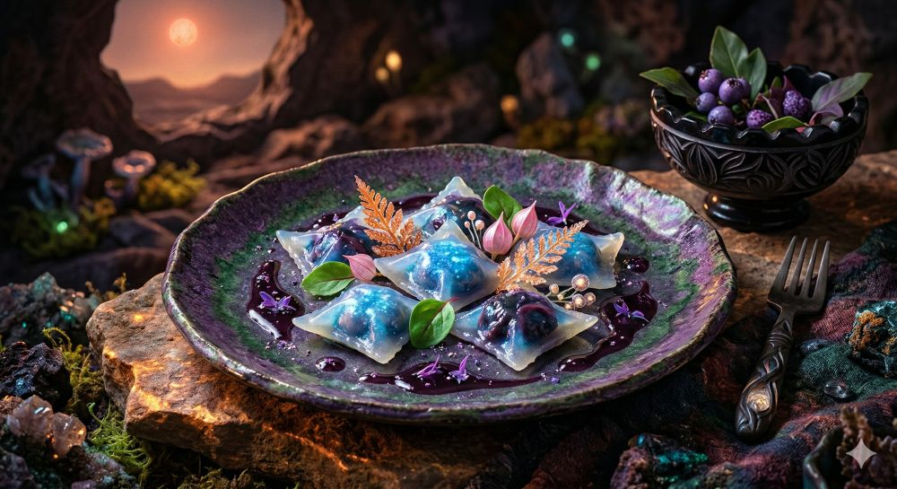

<!DOCTYPE html>
<html lang="en">
<head>
    <meta charset="UTF-8">
    <meta name="viewport" content="width=device-width, initial-scale=1.0">
    <title>Magrathean Pearl Wontons/title>
    <style>
        img {
            display: block;
            margin: auto;
        }
    </style>    
</head>
<body>
    <h1>Magrathean Pearl Wontons</h1>
    
    <h3>Ingredients</h3>
    <ul>
        <li><strong>5 Aria Bioluminescent Berry Sacs</strong>: These are the key to the entire operation. These semi-translucent, gelatinous pockets are not berries, but the respiratory organs of a highly nervous cave-dwelling fungus native to Aria. They must be harvested during the short "blue phase" of the moon of Viltvodle VI to maintain their intense indigo-cerulean internal glow.</li>
        <li><strong>1 Handful of Cryo-Preserved Viltvodle Cave Moss</strong>: This extremely fine, green moss forms the base of the wrapper material. It is prized for its high-tensile strength and its refusal to decompose, which is exactly what you want when containing volatile ingredients. It must be kept extremely cold until the moment of cooking.</li>
        <li><strong>1 Sprig of Gildweed (Sun-Dusted Variation)</strong>: These gold-copper, filigreed fronds are purely decorative. They are actually highly conductive mineral formations that look like plants. The Guide advises they have no taste but can, in a pinch, be used as a replacement fuse for a hyperdrive. (Ensure they are clean of sun-dust before placement; otherwise, they may detonate upon contact with saliva.)</li>
        <li><strong>1 Splash of Lunar Wine Reduction (Aged)</strong>: A highly potent, purple-viscous liquid that is a derivative of a very dangerous byproduct of early Magrathean construction projects. It provides the tartaric acid balance needed for the whole dish not to immediately vaporize, and it also adds that chic "dark matter" aesthetic to the final plating.</li>
    </ul>
    <h3>Steps</h3>
    <ol>
        <li><strong>Initiating the Transfusion Wrapper</strong>. Using the transfuser, activate the cryo-Viltvodle moss. The extreme cold causes the moss to instantly crystallize and fuse into a flexible, clear, glass-like membrane that forms the 'wrapper'. It is important to work quickly before it shatters.</li>
        <li><strong>Capturing the Blue Glow</strong>. Gently—and the Guide emphasizes <em>gently</em>—take five of the Aria Bioluminescent Berry Sacs and place them inside your newly formed clear membranes. The internal hydrostatic pressure of the sacs is what gives them the distinct dome shape, and the glow is a direct result of their continued respirating in their new environment.</li>
        <li><strong>Sealing the Membrane</strong>. The fusion must be performed in a pressurized containment field (or your chef’s station, if you don't mind the risk). Apply a directed heat-beam to the edges of the membranes to instantly seal them. If done correctly, they will form the perfect, uniform ravioli/wonton shapes with that unique dark indigo edge where the seal occurs.</li>
        <li><strong>The Finial (Non-Lethal) Plating</strong>.Now, the composition. Drizzle the purple-viscous Lunar Wine reduction onto a locally sourced rough slate or rock platter to create that sweeping, chaotic paint-splatter effect. Arrange your Pearl Wontons (minimum five, for symmetry) on the platter. Finally, extremely carefully place the decorative Gildweed fronds. They should nestle near the dumplings, looking gorgeous and totally not like a piece of high-grade engineering. Add a single, un-encapsulated glow-berry to the center for that artistic touch.</li>
    </ol>
    <h5><a href="../index.html">Back to the Menu</a></h5>
</body>
</html>